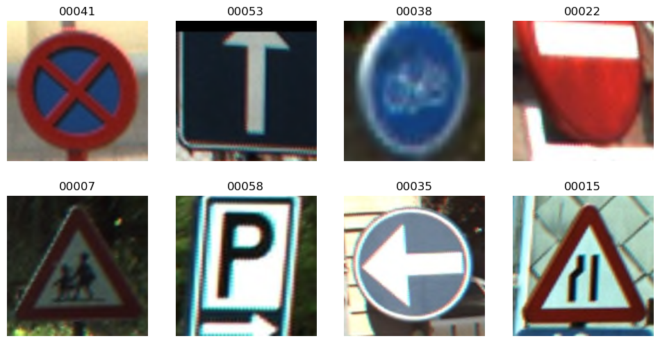
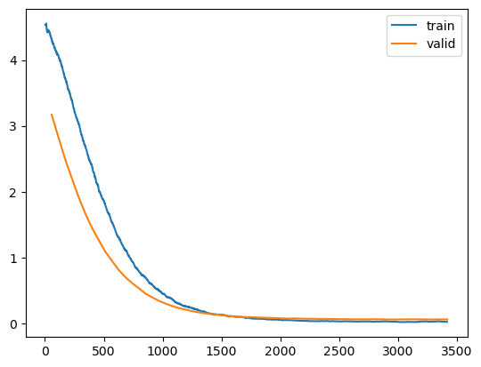
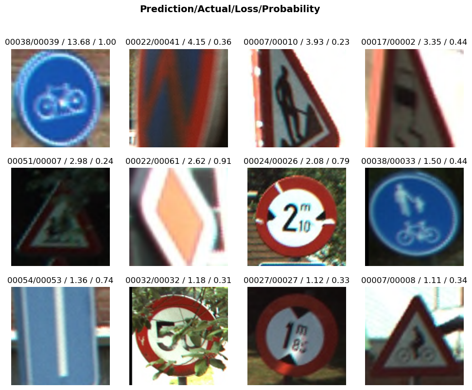
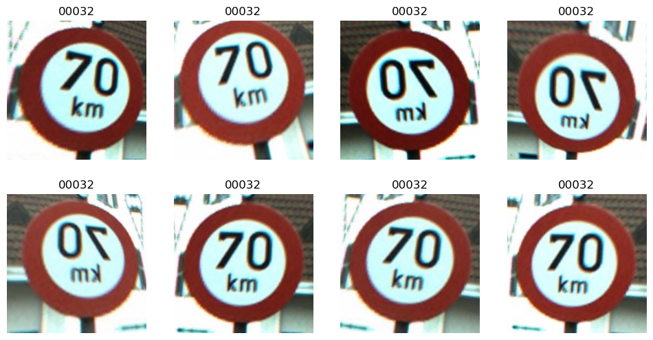
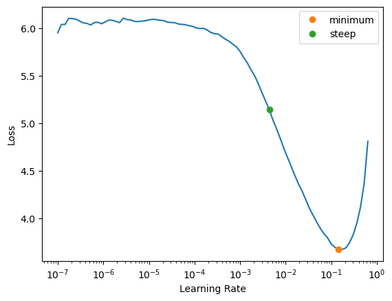
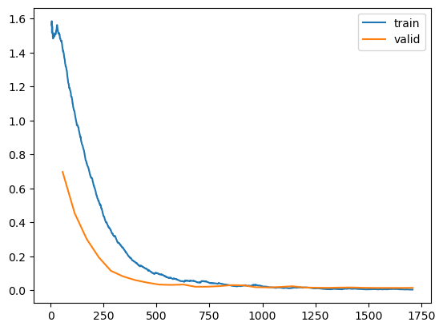
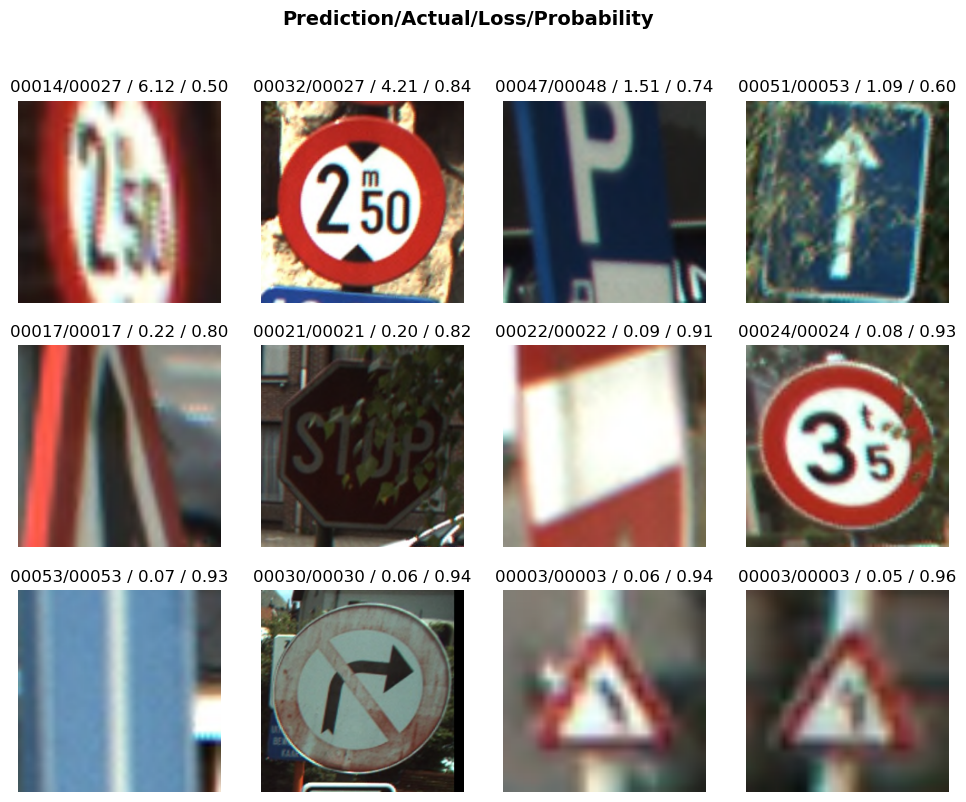
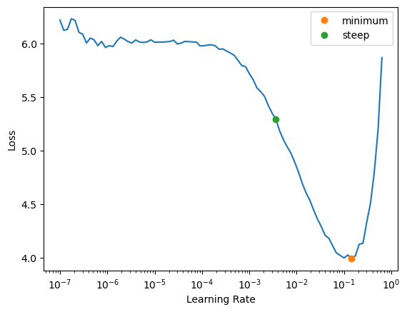
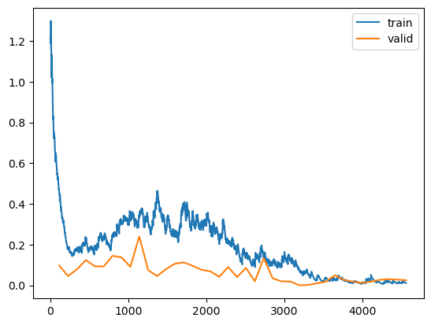
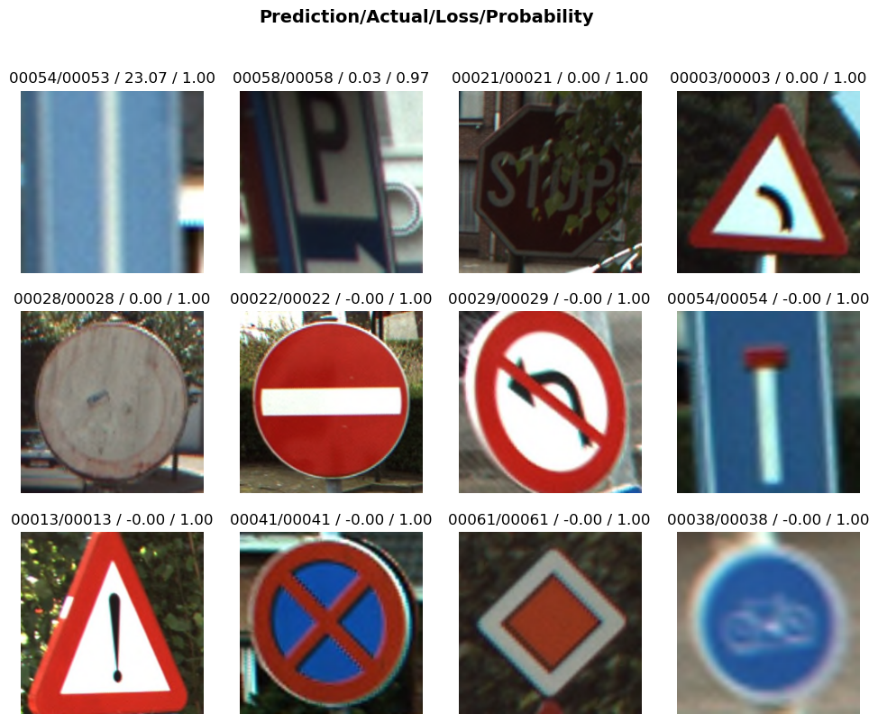

from fastai.vision.all import *
from pathlib import Path
import torch, numpy as np, pandas as pdTraffic Sign Recognition
# Fetch data from people.ee.ethz.ch
from zipfile import ZipFile
data_path = Path('./traffic-sign')
training_path = untar_data(url='https://people.ee.ethz.ch/~timofter/BelgiumTSC/BelgiumTSC_Training.zip', base=data_path.absolute(), data=data_path.absolute())
testing_path = untar_data(url='http://www.vision.ee.ethz.ch/~timofter/BelgiumTSC/BelgiumTSC_Testing.zip', base=data_path.absolute(), data=data_path.absolute())Data Discovery
Let’s have a look at one single image from the dataset first, so we know what we’re dealing with.
data_path = Path('./traffic-sign')
training_path = Path(data_path/'BelgiumTSC_Training')
testing_path = Path(data_path/'BelgiumTSC_Testing')
img = PILImage.create(training_path/'00006/00147_00000.ppm')
img.to_thumb(400)training_path.absolute()Path('/home/xstof/code/xstofai/nbs/traffic-sign/BelgiumTSC_Training')Build a quick first model
We’ll use FastAI to build a quick first model and see how far we get with that:
fnames = get_image_files(training_path) # gives us something like: [Path('/home/xstof/code/xstofai/nbs/traffic-sign/BelgiumTSC_Training/00006/00221_00000.ppm'),Path('/home/xstof/code/xstofai/nbs/traffic-sign/BelgiumTSC_Training/00006/00327_00001.ppm'),Path('/home/xstof/code/xstofai/nbs/traffic-sign/BelgiumTSC_Training/00006/00326_00001.ppm')]
def label_func(x): return x.parent.name
dls = ImageDataLoaders.from_path_func(training_path.absolute(), fnames, label_func, valid_ptc=0.2, seed=42, item_tfms=Resize(224))
dls.valid_ds.items[:3][Path('traffic-sign/BelgiumTSC_Training/00041/01401_00002.ppm'),
Path('traffic-sign/BelgiumTSC_Training/00041/01149_00000.ppm'),
Path('traffic-sign/BelgiumTSC_Training/00056/00151_00000.ppm')]dls.show_batch(nrows=2, ncols=4)
learn = vision_learner(dls, resnet34, metrics=error_rate)
learn.fine_tune(2)/home/xstof/mambaforge/lib/python3.9/site-packages/torchvision/models/_utils.py:208: UserWarning: The parameter 'pretrained' is deprecated since 0.13 and will be removed in 0.15, please use 'weights' instead.
warnings.warn(
/home/xstof/mambaforge/lib/python3.9/site-packages/torchvision/models/_utils.py:223: UserWarning: Arguments other than a weight enum or `None` for 'weights' are deprecated since 0.13 and will be removed in 0.15. The current behavior is equivalent to passing `weights=ResNet34_Weights.IMAGENET1K_V1`. You can also use `weights=ResNet34_Weights.DEFAULT` to get the most up-to-date weights.
warnings.warn(msg)| epoch | train_loss | valid_loss | error_rate | time |
|---|---|---|---|---|
| 0 | 2.765614 | 0.682876 | 0.177243 | 00:14 |
| epoch | train_loss | valid_loss | error_rate | time |
|---|---|---|---|---|
| 0 | 0.525985 | 0.168609 | 0.049234 | 00:17 |
| 1 | 0.250160 | 0.116856 | 0.032823 | 00:17 |
Let’s experiment with using a different learning rate; inspired by the learning rate finder:
lr_min,lr_steep = learn.lr_find(suggest_funcs=(minimum, steep))
0.00% [0/2 00:00<?]
24.56% [14/57 00:04<00:13 0.1065]
KeyboardInterrupt: #learn = vision_learner(dls, resnet50, metrics=error_rate)
learn = vision_learner(dls, resnet34, metrics=error_rate)
#learn.fine_tune(9, base_lr=1e-4, freeze_epochs=3)
learn.fine_tune(60, base_lr=1e-4)| epoch | train_loss | valid_loss | error_rate | time |
|---|---|---|---|---|
| 0 | 5.272032 | 3.511821 | 0.810722 | 00:12 |
| epoch | train_loss | valid_loss | error_rate | time |
|---|---|---|---|---|
| 0 | 4.322254 | 3.168630 | 0.722101 | 00:16 |
| 1 | 4.073076 | 2.831528 | 0.649891 | 00:16 |
| 2 | 3.727599 | 2.497461 | 0.554705 | 00:16 |
| 3 | 3.388522 | 2.206383 | 0.492341 | 00:17 |
| 4 | 3.040637 | 1.924404 | 0.439825 | 00:17 |
| 5 | 2.693980 | 1.672572 | 0.386214 | 00:17 |
| 6 | 2.407907 | 1.453600 | 0.324945 | 00:17 |
| 7 | 2.051530 | 1.267668 | 0.291028 | 00:17 |
| 8 | 1.805684 | 1.090083 | 0.249453 | 00:17 |
| 9 | 1.539369 | 0.948155 | 0.214442 | 00:17 |
| 10 | 1.306851 | 0.811161 | 0.172867 | 00:17 |
| 11 | 1.106547 | 0.700792 | 0.148796 | 00:17 |
| 12 | 0.940430 | 0.611577 | 0.134573 | 00:17 |
| 13 | 0.800753 | 0.532640 | 0.122538 | 00:17 |
| 14 | 0.702655 | 0.451409 | 0.111597 | 00:17 |
| 15 | 0.593532 | 0.394403 | 0.092998 | 00:17 |
| 16 | 0.500641 | 0.342239 | 0.080963 | 00:17 |
| 17 | 0.422322 | 0.299860 | 0.068928 | 00:17 |
| 18 | 0.366605 | 0.262785 | 0.065646 | 00:17 |
| 19 | 0.297391 | 0.230043 | 0.061269 | 00:17 |
| 20 | 0.261126 | 0.208636 | 0.057987 | 00:17 |
| 21 | 0.234320 | 0.183331 | 0.051422 | 00:17 |
| 22 | 0.197685 | 0.165864 | 0.041575 | 00:17 |
| 23 | 0.170155 | 0.149604 | 0.033917 | 00:17 |
| 24 | 0.142079 | 0.138600 | 0.032823 | 00:17 |
| 25 | 0.135151 | 0.128846 | 0.029540 | 00:17 |
| 26 | 0.117065 | 0.115731 | 0.025164 | 00:17 |
| 27 | 0.107656 | 0.105887 | 0.020788 | 00:17 |
| 28 | 0.099796 | 0.098209 | 0.022976 | 00:17 |
| 29 | 0.086735 | 0.095067 | 0.022976 | 00:17 |
| 30 | 0.074561 | 0.092893 | 0.020788 | 00:17 |
| 31 | 0.068633 | 0.087713 | 0.021882 | 00:17 |
| 32 | 0.060317 | 0.084592 | 0.018600 | 00:17 |
| 33 | 0.057718 | 0.081010 | 0.019694 | 00:17 |
| 34 | 0.054945 | 0.077566 | 0.018600 | 00:17 |
| 35 | 0.051517 | 0.072584 | 0.016411 | 00:17 |
| 36 | 0.045129 | 0.074221 | 0.017505 | 00:17 |
| 37 | 0.040007 | 0.072452 | 0.016411 | 00:17 |
| 38 | 0.037295 | 0.069297 | 0.016411 | 00:17 |
| 39 | 0.035892 | 0.068540 | 0.016411 | 00:17 |
| 40 | 0.031437 | 0.066725 | 0.017505 | 00:17 |
| 41 | 0.035449 | 0.066943 | 0.013129 | 00:17 |
| 42 | 0.033334 | 0.066297 | 0.015317 | 00:17 |
| 43 | 0.028813 | 0.063224 | 0.012035 | 00:17 |
| 44 | 0.030409 | 0.063654 | 0.014223 | 00:17 |
| 45 | 0.030178 | 0.060446 | 0.012035 | 00:17 |
| 46 | 0.028744 | 0.062024 | 0.014223 | 00:17 |
| 47 | 0.030050 | 0.060515 | 0.012035 | 00:17 |
| 48 | 0.022793 | 0.062337 | 0.013129 | 00:17 |
| 49 | 0.026851 | 0.061434 | 0.013129 | 00:17 |
| 50 | 0.031460 | 0.060007 | 0.010941 | 00:17 |
| 51 | 0.024205 | 0.059654 | 0.013129 | 00:17 |
| 52 | 0.019963 | 0.060336 | 0.013129 | 00:17 |
| 53 | 0.021899 | 0.060539 | 0.013129 | 00:17 |
| 54 | 0.020242 | 0.061180 | 0.014223 | 00:17 |
| 55 | 0.028077 | 0.060424 | 0.013129 | 00:17 |
| 56 | 0.029257 | 0.060081 | 0.013129 | 00:17 |
| 57 | 0.027021 | 0.058778 | 0.012035 | 00:17 |
| 58 | 0.028170 | 0.060581 | 0.013129 | 00:17 |
| 59 | 0.023330 | 0.059495 | 0.013129 | 00:17 |
learn.recorder.plot_loss()
What we learn here is that with a slow learning rate and 60 epochs, we’re getting down to an error rate of 0.0185 or approximately 2%. Let’s have a look at where those errors are in our data set by looking at a couple of examples.
interp = ClassificationInterpretation.from_learner(learn)
# interp.plot_confusion_matrix(figsize=(12,12), dpi=60)
# interp.most_confused()
interp.plot_top_losses(12)
learn.lr0.001img = PILImage.create(training_path/'00047/00010_00000.ppm')
img.to_thumb(400)Data Augmentation
We’ll bring more variation in our dataset by augmenting our data now: resizing, skewing etc..
fnames = get_image_files(training_path) # gives us something like: [Path('/home/xstof/code/xstofai/nbs/traffic-sign/BelgiumTSC_Training/00006/00221_00000.ppm'),Path('/home/xstof/code/xstofai/nbs/traffic-sign/BelgiumTSC_Training/00006/00327_00001.ppm'),Path('/home/xstof/code/xstofai/nbs/traffic-sign/BelgiumTSC_Training/00006/00326_00001.ppm')]
def label_func(x): return x.parent.name
print(f'taking training images from path: {training_path.absolute()}')
# dls = ImageDataLoaders.from_path_func(training_path.absolute(), fnames, label_func, valid_ptc=0.2, seed=42,
# item_tfms=RandomResizedCropGPU(224, min_scale=.5),
# batch_tfms=aug_transforms())
dls = ImageDataLoaders.from_path_func(training_path.absolute(), fnames, label_func, valid_ptc=0.2, seed=42,
item_tfms=Resize(224),
batch_tfms=aug_transforms())taking training images from path: /home/xstof/code/xstofai/nbs/traffic-sign/BelgiumTSC_Trainingdls.train.show_batch(max_n=8, nrows=2, unique=True)
Now let’s train another model using these augmented versions of our images:
learn = vision_learner(dls, resnet34, metrics=error_rate)lr_min,lr_steep = learn.lr_find(suggest_funcs=(minimum, steep))
learn.fine_tune(30, base_lr=1e-3)| epoch | train_loss | valid_loss | error_rate | time |
|---|---|---|---|---|
| 0 | 3.608980 | 1.084114 | 0.268053 | 00:13 |
| epoch | train_loss | valid_loss | error_rate | time |
|---|---|---|---|---|
| 0 | 1.430907 | 0.698026 | 0.169584 | 00:17 |
| 1 | 1.056159 | 0.454872 | 0.114880 | 00:17 |
| 2 | 0.749442 | 0.302111 | 0.082057 | 00:17 |
| 3 | 0.528836 | 0.194878 | 0.048140 | 00:17 |
| 4 | 0.355295 | 0.115626 | 0.030635 | 00:17 |
| 5 | 0.253510 | 0.082918 | 0.021882 | 00:17 |
| 6 | 0.168605 | 0.061095 | 0.014223 | 00:17 |
| 7 | 0.124957 | 0.046257 | 0.010941 | 00:17 |
| 8 | 0.096753 | 0.034474 | 0.008753 | 00:17 |
| 9 | 0.074080 | 0.032612 | 0.006565 | 00:18 |
| 10 | 0.053752 | 0.034777 | 0.009847 | 00:17 |
| 11 | 0.052620 | 0.021781 | 0.007659 | 00:17 |
| 12 | 0.049211 | 0.022058 | 0.004376 | 00:17 |
| 13 | 0.042934 | 0.025418 | 0.006565 | 00:18 |
| 14 | 0.027902 | 0.031443 | 0.007659 | 00:17 |
| 15 | 0.029918 | 0.029799 | 0.007659 | 00:17 |
| 16 | 0.033211 | 0.019079 | 0.004376 | 00:18 |
| 17 | 0.020829 | 0.017851 | 0.004376 | 00:17 |
| 18 | 0.016527 | 0.020309 | 0.006565 | 00:17 |
| 19 | 0.015539 | 0.024692 | 0.008753 | 00:17 |
| 20 | 0.017411 | 0.017495 | 0.003282 | 00:17 |
| 21 | 0.011809 | 0.016099 | 0.004376 | 00:17 |
| 22 | 0.006842 | 0.015237 | 0.004376 | 00:18 |
| 23 | 0.006921 | 0.017040 | 0.005470 | 00:18 |
| 24 | 0.009414 | 0.017562 | 0.005470 | 00:18 |
| 25 | 0.006611 | 0.015416 | 0.004376 | 00:18 |
| 26 | 0.006826 | 0.014822 | 0.004376 | 00:18 |
| 27 | 0.007830 | 0.014976 | 0.004376 | 00:18 |
| 28 | 0.006141 | 0.014720 | 0.004376 | 00:18 |
| 29 | 0.004856 | 0.015269 | 0.004376 | 00:18 |
learn.recorder.plot_loss()
interp = ClassificationInterpretation.from_learner(learn)
interp.plot_top_losses(12)
Data Cleaning
Something tells us that there might still be images wrongly classified in our training data. We can explore this using the ImageClassifierCleaner widget. When we do so, it turns out that indeed there’s images that are wrongly classified in our dataset. Let’s clean those up.
import ipywidgets
from fastai.vision.widgets import ImageClassifierCleaner
cleaner = ImageClassifierCleaner(learn)
cleanerdeleted = cleaner.delete()
for d in deleted: print(f'deleted: {d}')
for idx,cat in cleaner.change(): print(f'index: {idx} in cat: {cat}')deleted: 3
index: 2 in cat: 00038
index: 6 in cat: 00038for idx in cleaner.delete(): cleaner.fns[idx].unlink()#for idx,cat in cleaner.change(): shutil.move(str(cleaner.fns[idx]), path/cat)
for idx,cat in cleaner.change(): print(f'move {cleaner.fns[idx]} to {Path(cleaner.fns[idx]).parent.parent / cat}')
for idx,cat in cleaner.change(): shutil.move(str(cleaner.fns[idx]), Path(cleaner.fns[idx]).parent.parent / cat)move traffic-sign/BelgiumTSC_Training/00039/01911_00001.ppm to traffic-sign/BelgiumTSC_Training/00038
move traffic-sign/BelgiumTSC_Training/00039/01911_00002.ppm to traffic-sign/BelgiumTSC_Training/00038After our cleaning operation, our error rate went down even a bit further, to less than 0,5%.
Testing the Model
We now have a model that we can test against a testing data set. Let’s download that first:
test_files = get_image_files(testing_path)
test_files_string = test_files.map(lambda f: str(f.absolute()))
print(f'file {test_files[0]} has correct label: {label_func(test_files[0])}')
type(test_files_string)file traffic-sign/BelgiumTSC_Testing/00006/02039_00002.ppm has correct label: 00006fastcore.foundation.Ltestdata = pd.DataFrame(np.array(test_files_string) , columns = ['filename'])
testdata| filename | |
|---|---|
| 0 | /home/xstof/code/xstofai/nbs/traffic-sign/BelgiumTSC_Testing/00006/02039_00002.ppm |
| 1 | /home/xstof/code/xstofai/nbs/traffic-sign/BelgiumTSC_Testing/00006/02039_00001.ppm |
| 2 | /home/xstof/code/xstofai/nbs/traffic-sign/BelgiumTSC_Testing/00006/02039_00000.ppm |
| 3 | /home/xstof/code/xstofai/nbs/traffic-sign/BelgiumTSC_Testing/00006/02083_00000.ppm |
| 4 | /home/xstof/code/xstofai/nbs/traffic-sign/BelgiumTSC_Testing/00006/02083_00002.ppm |
| ... | ... |
| 2515 | /home/xstof/code/xstofai/nbs/traffic-sign/BelgiumTSC_Testing/00018/02030_00000.ppm |
| 2516 | /home/xstof/code/xstofai/nbs/traffic-sign/BelgiumTSC_Testing/00018/01984_00001.ppm |
| 2517 | /home/xstof/code/xstofai/nbs/traffic-sign/BelgiumTSC_Testing/00018/02193_00002.ppm |
| 2518 | /home/xstof/code/xstofai/nbs/traffic-sign/BelgiumTSC_Testing/00018/02194_00000.ppm |
| 2519 | /home/xstof/code/xstofai/nbs/traffic-sign/BelgiumTSC_Testing/00018/02171_00002.ppm |
2520 rows × 1 columns
Let’s extend our testdata with a column that contains the ground truth:
testdata['label'] = testdata.apply(lambda row: label_func(Path(row['filename'])), axis = 1)
testdata| filename | label | |
|---|---|---|
| 0 | /home/xstof/code/xstofai/nbs/traffic-sign/BelgiumTSC_Testing/00006/02039_00002.ppm | 00006 |
| 1 | /home/xstof/code/xstofai/nbs/traffic-sign/BelgiumTSC_Testing/00006/02039_00001.ppm | 00006 |
| 2 | /home/xstof/code/xstofai/nbs/traffic-sign/BelgiumTSC_Testing/00006/02039_00000.ppm | 00006 |
| 3 | /home/xstof/code/xstofai/nbs/traffic-sign/BelgiumTSC_Testing/00006/02083_00000.ppm | 00006 |
| 4 | /home/xstof/code/xstofai/nbs/traffic-sign/BelgiumTSC_Testing/00006/02083_00002.ppm | 00006 |
| ... | ... | ... |
| 2515 | /home/xstof/code/xstofai/nbs/traffic-sign/BelgiumTSC_Testing/00018/02030_00000.ppm | 00018 |
| 2516 | /home/xstof/code/xstofai/nbs/traffic-sign/BelgiumTSC_Testing/00018/01984_00001.ppm | 00018 |
| 2517 | /home/xstof/code/xstofai/nbs/traffic-sign/BelgiumTSC_Testing/00018/02193_00002.ppm | 00018 |
| 2518 | /home/xstof/code/xstofai/nbs/traffic-sign/BelgiumTSC_Testing/00018/02194_00000.ppm | 00018 |
| 2519 | /home/xstof/code/xstofai/nbs/traffic-sign/BelgiumTSC_Testing/00018/02171_00002.ppm | 00018 |
2520 rows × 2 columns
Now we need the predictions from our model for each row, so we can compare those against the truth label. For a single item this goes like this:
predicted_label, predicted_idx, predicted_probs = learn.predict(testdata['filename'][0])
predicted_label2, predicted_idx, predicted_probs = learn.predict(testdata['filename'][2515])
predicted_label3, predicted_idx, predicted_probs = learn.predict(testdata['filename'][1000])
print(f'for file {testdata.filename[0]} we predicted a label of {predicted_label}')
print(f'for file {testdata.filename[2515]} we predicted a label of {predicted_label2}')
print(f'for file {testdata.filename[1000]} we predicted a label of {predicted_label3}')for file /home/xstof/code/xstofai/nbs/traffic-sign/BelgiumTSC_Testing/00006/02039_00002.ppm we predicted a label of 00005
for file /home/xstof/code/xstofai/nbs/traffic-sign/BelgiumTSC_Testing/00018/02030_00000.ppm we predicted a label of 00018
for file /home/xstof/code/xstofai/nbs/traffic-sign/BelgiumTSC_Testing/00019/02124_00000.ppm we predicted a label of 00019For all our labels:
def predict(filename):
predicted_label, _, _ = learn.predict(filename)
return predicted_label
# predict(testdata['filename'][0])# testdata['predicted'] = testdata.apply(lambda row: predict(row['filename']), axis=1)
# testdata# get a dataloaders that has the exact same transformations applied as during training:
tst_dl = learn.dls.test_dl(testdata.filename)
preds, _ = learn.get_preds(dl=tst_dl)
predsTensorBase([[1.1896e-03, 3.2670e-05, 9.1291e-06, ..., 2.1299e-06,
1.9771e-07, 6.4971e-07],
[7.4278e-05, 2.8059e-06, 5.6598e-06, ..., 7.9164e-07,
8.2710e-07, 4.7385e-07],
[1.3759e-04, 1.2551e-04, 1.1870e-04, ..., 1.3204e-05,
1.2395e-05, 3.2555e-05],
...,
[2.2055e-07, 1.0322e-06, 1.1944e-05, ..., 1.5188e-07,
1.5343e-06, 6.6106e-07],
[1.4748e-07, 2.0833e-07, 1.8539e-07, ..., 2.2542e-08,
9.2468e-07, 1.0912e-07],
[7.6813e-08, 4.3783e-09, 1.5067e-08, ..., 2.6169e-09,
1.4087e-08, 2.1832e-09]])preds[0]TensorBase([1.1896e-03, 3.2670e-05, 9.1291e-06, 3.8356e-05, 2.5520e-04,
9.5691e-01, 4.1199e-02, 2.4053e-06, 2.2224e-05, 6.6508e-06,
2.9380e-06, 9.0039e-07, 5.7958e-07, 2.8193e-07, 1.2864e-06,
8.2779e-08, 5.7793e-06, 7.6418e-07, 4.1857e-06, 6.6967e-08,
6.4850e-07, 5.7714e-06, 3.5365e-08, 1.5344e-06, 1.2382e-04,
1.7104e-06, 3.4046e-06, 6.3849e-06, 4.5234e-07, 4.1998e-05,
1.7630e-07, 2.4071e-07, 2.4519e-07, 9.8147e-07, 1.1657e-06,
2.7170e-07, 9.9690e-07, 3.8178e-07, 6.5608e-08, 1.0690e-07,
9.0703e-08, 3.6442e-06, 2.3846e-07, 7.8937e-08, 6.5177e-07,
2.4670e-07, 1.4663e-05, 6.6853e-06, 1.0686e-06, 1.9420e-06,
3.4722e-06, 2.9240e-08, 5.8613e-06, 5.9746e-09, 2.1060e-07,
1.2808e-06, 1.7598e-06, 4.8697e-06, 7.5268e-05, 2.1299e-06,
1.9771e-07, 6.4971e-07])preds[0].sum()TensorBase(1.)print(f'index of max value in first row is: {preds[0].argmax()}') # this gives us the index of where the max value in this row is:
preds_indexes = preds.argmax(dim=1)
preds_indexesindex of max value in first row is: 5TensorBase([ 5, 6, 6, ..., 18, 18, 18])Now we have the indexes for the max values for each row in our predictions. Let’s translate that to the actual label:
preds_indexes_list = L(preds_indexes.tolist())
pred_labels = preds_indexes_list.map(lambda idx: learn.dls.vocab[idx])
pred_labels[:5](#5) ['00005','00006','00006','00005','00006']Lets turn this information into another column on our dataframe:
testdata['predicted'] = pd.DataFrame(np.array(pred_labels))
testdata['correct'] = testdata.label == testdata.predicted
testdata| filename | label | predicted | correct | |
|---|---|---|---|---|
| 0 | /home/xstof/code/xstofai/nbs/traffic-sign/BelgiumTSC_Testing/00006/02039_00002.ppm | 00006 | 00005 | False |
| 1 | /home/xstof/code/xstofai/nbs/traffic-sign/BelgiumTSC_Testing/00006/02039_00001.ppm | 00006 | 00006 | True |
| 2 | /home/xstof/code/xstofai/nbs/traffic-sign/BelgiumTSC_Testing/00006/02039_00000.ppm | 00006 | 00006 | True |
| 3 | /home/xstof/code/xstofai/nbs/traffic-sign/BelgiumTSC_Testing/00006/02083_00000.ppm | 00006 | 00005 | False |
| 4 | /home/xstof/code/xstofai/nbs/traffic-sign/BelgiumTSC_Testing/00006/02083_00002.ppm | 00006 | 00006 | True |
| ... | ... | ... | ... | ... |
| 2515 | /home/xstof/code/xstofai/nbs/traffic-sign/BelgiumTSC_Testing/00018/02030_00000.ppm | 00018 | 00018 | True |
| 2516 | /home/xstof/code/xstofai/nbs/traffic-sign/BelgiumTSC_Testing/00018/01984_00001.ppm | 00018 | 00018 | True |
| 2517 | /home/xstof/code/xstofai/nbs/traffic-sign/BelgiumTSC_Testing/00018/02193_00002.ppm | 00018 | 00018 | True |
| 2518 | /home/xstof/code/xstofai/nbs/traffic-sign/BelgiumTSC_Testing/00018/02194_00000.ppm | 00018 | 00018 | True |
| 2519 | /home/xstof/code/xstofai/nbs/traffic-sign/BelgiumTSC_Testing/00018/02171_00002.ppm | 00018 | 00018 | True |
2520 rows × 4 columns
correctCount = testdata.correct.sum()
totalCount = testdata.correct.count()
print(f'Out of {totalCount} items {correctCount} were predicted correctly. This is {(correctCount/totalCount)*100}%')Out of 2520 items 2467 were predicted correctly. This is 97.89682539682539%Trying convnext_large_in22ft1k
Our choice for resnet might not be optimal. Let’s have a look if an architecture like convnext (which should perform better and be better suitable for transfer learning) significantly impacts the results:
!pip install timmRequirement already satisfied: timm in /home/xstof/mambaforge/lib/python3.9/site-packages (0.6.7)
Requirement already satisfied: torch>=1.4 in /home/xstof/mambaforge/lib/python3.9/site-packages (from timm) (1.12.1)
Requirement already satisfied: torchvision in /home/xstof/mambaforge/lib/python3.9/site-packages (from timm) (0.13.1)
Requirement already satisfied: typing_extensions in /home/xstof/mambaforge/lib/python3.9/site-packages (from torch>=1.4->timm) (4.3.0)
Requirement already satisfied: numpy in /home/xstof/mambaforge/lib/python3.9/site-packages (from torchvision->timm) (1.23.2)
Requirement already satisfied: requests in /home/xstof/mambaforge/lib/python3.9/site-packages (from torchvision->timm) (2.28.1)
Requirement already satisfied: pillow!=8.3.*,>=5.3.0 in /home/xstof/mambaforge/lib/python3.9/site-packages (from torchvision->timm) (9.2.0)
Requirement already satisfied: idna<4,>=2.5 in /home/xstof/mambaforge/lib/python3.9/site-packages (from requests->torchvision->timm) (3.3)
Requirement already satisfied: certifi>=2017.4.17 in /home/xstof/mambaforge/lib/python3.9/site-packages (from requests->torchvision->timm) (2022.6.15)
Requirement already satisfied: urllib3<1.27,>=1.21.1 in /home/xstof/mambaforge/lib/python3.9/site-packages (from requests->torchvision->timm) (1.26.11)
Requirement already satisfied: charset-normalizer<3,>=2 in /home/xstof/mambaforge/lib/python3.9/site-packages (from requests->torchvision->timm) (2.1.0)import timm
fnames = get_image_files(training_path) # gives us something like: [Path('/home/xstof/code/xstofai/nbs/traffic-sign/BelgiumTSC_Training/00006/00221_00000.ppm'),Path('/home/xstof/code/xstofai/nbs/traffic-sign/BelgiumTSC_Training/00006/00327_00001.ppm'),Path('/home/xstof/code/xstofai/nbs/traffic-sign/BelgiumTSC_Training/00006/00326_00001.ppm')]
def label_func(x): return x.parent.name
dls = ImageDataLoaders.from_path_func(training_path.absolute(), fnames, label_func, valid_ptc=0.2, seed=42,
bs = 32,
item_tfms=Resize(224),
batch_tfms=aug_transforms())
# arch = "convnext_large_in22ft1k"
# arch = "convnext_base_in22ft1k"
# arch = "convnext_small_in22k"
arch = "convnext_tiny"
learn = vision_learner(dls, arch, metrics=error_rate)
lr_min,lr_steep = learn.lr_find(suggest_funcs=(minimum, steep))
torch.cuda.empty_cache()
learn.fine_tune(40, base_lr=5*0.01)| epoch | train_loss | valid_loss | error_rate | time |
|---|---|---|---|---|
| 0 | 1.954276 | 1.035131 | 0.152079 | 01:08 |
| epoch | train_loss | valid_loss | error_rate | time |
|---|---|---|---|---|
| 0 | 0.461623 | 0.096517 | 0.024070 | 02:58 |
| 1 | 0.176597 | 0.045619 | 0.013129 | 03:05 |
| 2 | 0.174104 | 0.078769 | 0.028446 | 03:04 |
| 3 | 0.223794 | 0.124076 | 0.029540 | 03:08 |
| 4 | 0.179282 | 0.093229 | 0.013129 | 03:05 |
| 5 | 0.240123 | 0.092536 | 0.009847 | 03:02 |
| 6 | 0.235270 | 0.144539 | 0.024070 | 02:59 |
| 7 | 0.306131 | 0.137176 | 0.022976 | 02:58 |
| 8 | 0.331769 | 0.090923 | 0.020788 | 02:58 |
| 9 | 0.343526 | 0.239809 | 0.024070 | 02:57 |
| 10 | 0.318985 | 0.075061 | 0.016411 | 02:57 |
| 11 | 0.462391 | 0.045153 | 0.008753 | 02:58 |
| 12 | 0.286320 | 0.079018 | 0.017505 | 02:58 |
| 13 | 0.242126 | 0.105642 | 0.013129 | 02:59 |
| 14 | 0.379540 | 0.112675 | 0.010941 | 03:00 |
| 15 | 0.363734 | 0.095806 | 0.008753 | 03:00 |
| 16 | 0.296819 | 0.076006 | 0.009847 | 03:00 |
| 17 | 0.279385 | 0.068440 | 0.004376 | 02:59 |
| 18 | 0.205650 | 0.041700 | 0.006565 | 02:59 |
| 19 | 0.209169 | 0.089480 | 0.007659 | 02:58 |
| 20 | 0.167243 | 0.040720 | 0.005470 | 02:58 |
| 21 | 0.150439 | 0.085281 | 0.005470 | 02:57 |
| 22 | 0.096399 | 0.019508 | 0.005470 | 02:58 |
| 23 | 0.135546 | 0.132828 | 0.005470 | 02:58 |
| 24 | 0.113812 | 0.034404 | 0.005470 | 02:58 |
| 25 | 0.097064 | 0.019203 | 0.004376 | 02:58 |
| 26 | 0.128343 | 0.018315 | 0.002188 | 02:57 |
| 27 | 0.074050 | 0.000174 | 0.000000 | 02:57 |
| 28 | 0.055352 | 0.001801 | 0.001094 | 02:58 |
| 29 | 0.025187 | 0.009907 | 0.002188 | 02:58 |
| 30 | 0.035481 | 0.018227 | 0.003282 | 02:59 |
| 31 | 0.028558 | 0.049025 | 0.003282 | 02:59 |
| 32 | 0.024543 | 0.026493 | 0.004376 | 02:58 |
| 33 | 0.014045 | 0.018288 | 0.001094 | 02:57 |
| 34 | 0.008337 | 0.011975 | 0.001094 | 02:57 |
| 35 | 0.021824 | 0.017372 | 0.001094 | 02:58 |
| 36 | 0.015128 | 0.026644 | 0.001094 | 02:57 |
| 37 | 0.023150 | 0.029900 | 0.001094 | 02:58 |
| 38 | 0.010913 | 0.027740 | 0.001094 | 02:57 |
| 39 | 0.010624 | 0.025277 | 0.001094 | 02:58 |
torch.cuda.empty_cache()learn.dls.bs64learn.recorder.plot_loss()
interp = ClassificationInterpretation.from_learner(learn)
interp.plot_top_losses(12)
test_files = get_image_files(testing_path)
test_files_string = test_files.map(lambda f: str(f.absolute()))
print(f'file {test_files[0]} has correct label: {label_func(test_files[0])}')
testdata = pd.DataFrame(np.array(test_files_string) , columns = ['filename'])
testdata['label'] = testdata.apply(lambda row: label_func(Path(row['filename'])), axis = 1)
def predict(filename):
predicted_label, _, _ = learn.predict(filename)
return predicted_label
tst_dl = learn.dls.test_dl(testdata.filename)
preds, _ = learn.get_preds(dl=tst_dl)
preds_indexes = preds.argmax(dim=1)
preds_indexes_list = L(preds_indexes.tolist())
pred_labels = preds_indexes_list.map(lambda idx: learn.dls.vocab[idx])
testdata['predicted'] = pd.DataFrame(np.array(pred_labels))
testdata['correct'] = testdata.label == testdata.predicted
correctCount = testdata.correct.sum()
totalCount = testdata.correct.count()
print(f'Out of {totalCount} items {correctCount} were predicted correctly. This is {(correctCount/totalCount)*100}%')file traffic-sign/BelgiumTSC_Testing/00006/02039_00002.ppm has correct label: 00006Out of 2520 items 2495 were predicted correctly. This is 99.0079365079365%